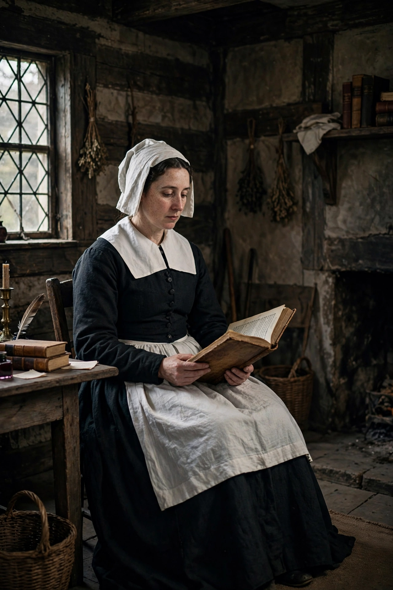

 | |
| Born | Anne Dudley, c. 1612, Northampton, England |
|---|---|
| Died | 16 September 1672 (aged c. 60), North Andover, Massachusetts Bay Colony |
| Occupation | Poet |
| Language | English |
| Notable works | The Tenth Muse Lately Sprung Up in America (1650); "To My Dear and Loving Husband" |
| Spouse | Simon Bradstreet |
Anne Bradstreet (c. 1612 – 16 September 1672) was the most prominent of early English poets of North America and the first writer in England's North American colonies to be published. She is the first known American poet. Her first volume of poetry, The Tenth Muse Lately Sprung Up in America (1650), was the only work of hers published during her lifetime; a second volume appeared posthumously in 1678.
Born in Northampton, England, she was the daughter of Thomas Dudley, a steward of the Earl of Lincoln and later governor of the Massachusetts Bay Colony. In 1628 she married Simon Bradstreet, and in 1630 the couple emigrated with the Winthrop Fleet to the New World, settling first at Salem and later at Cambridge, Ipswich, and North Andover.
Bradstreet was unusually well educated for a woman of her time, with access to her father's library and tutoring in history, languages, and literature. Despite the hardships of colonial life — including frequent illness, the raising of eight children, and a house fire in 1666 that destroyed her home and books — she wrote poetry throughout her life, largely for her family rather than for publication.
Her brother-in-law, the Reverend John Woodbridge, took a manuscript of her poems to London, where it was published in 1650, apparently without her prior knowledge. The volume made her famous on both sides of the Atlantic.
Bradstreet's early poems are conventional imitations of popular English models, but her later work — meditations on domestic life, faith, mortality, and nature — is more personal and accomplished. Among her best-known poems are "To My Dear and Loving Husband", "Upon the Burning of Our House", "As Weary Pilgrim", and the long elegy "In Memory of My Dear Grandchild Elizabeth Bradstreet". Her prose meditations and an autobiographical letter to her children were also published posthumously.
Her work reflects the tension between her Puritan faith and her affection for the world, and she is widely regarded as a precursor of later American poetry and an important figure in early American literature.